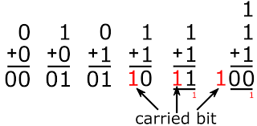

Here is a table of how it works!
0 + 0 = 0
0 + 1 = 1
1 + 0 = 1
1 + 1 = 0*
*(With a carry-over of 1)
"Adding two "1" digits produces a digit "0", while 1 will have to be added to the next column. This is similar to what happens in decimal when certain single-digit numbers are add ed together; if the result equals or exceeds the value of th e radix (10), the digit to the left is incremented"
Let's see how the addition works out!